本报告分析了 16 个带明确网络标签的实验目录，来源于 checkpoints-and-logs/local。核心指标来自 training_history_full.csv、 evaluation_metrics.csv 和可用的 monitor_summary.json。按你的新要求，所有图表与正文主结论统一只看 前 3000 iter，同时完全排除四个 transformer_1/2d_old 旧批次实验。
报告重点是前 3000 iter 内的训练回报、评估回报、收敛稳定性和计算效率。跨家族对比时需要保留一个重要限定： FC、CNN、Transformer 的 YAML 并不只改了网络结构，同时也带有不同学习率、正则化和损失系数， 所以下面的“跨家族结论”本质上是“架构 + 该家族配置组合”的结论；只有 CNN1-5 和 Transformer 1D/2D 这两组消融内部对比更接近单变量。
这里列的是当前仓库里训练入口 runTorch.py 的公共默认参数，以及 config/agent-trainer 下的算法训练器配置。它们定义了本批实验的基础训练预算与 PPO 特有超参数。
这里按当前代码与配置文件总结三类网络的结构变化轴。FC 与 Transformer 主要是家族级差异，CNN 和 Transformer 位置编码内部则属于更标准的消融。
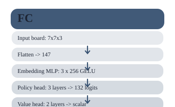
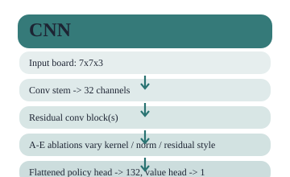
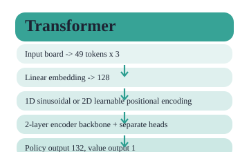
全局展平后直接送入多层 MLP。优点是实现简单、单步训练开销低；缺点是完全丢掉 2D 局部结构先验。
共享卷积骨干加残差块，再接 policy / value head。cnn1-cnn5 这组实验本质上在测试核大小、归一化方式和残差增强模块。
将棋盘展平成 49 个 token，先做线性嵌入，再注入 1D 或 2D 位置编码。本报告仅保留新批次的 1D/2D 对比，不再展示旧批次结果。
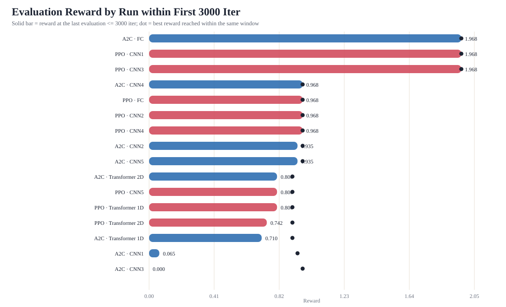
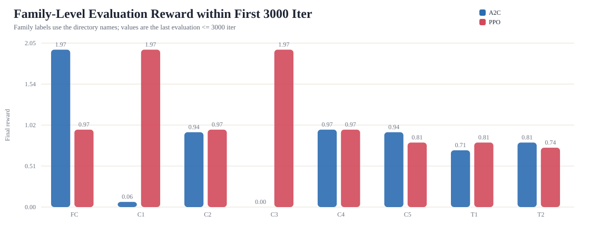
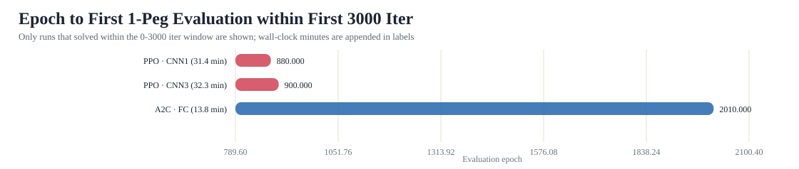
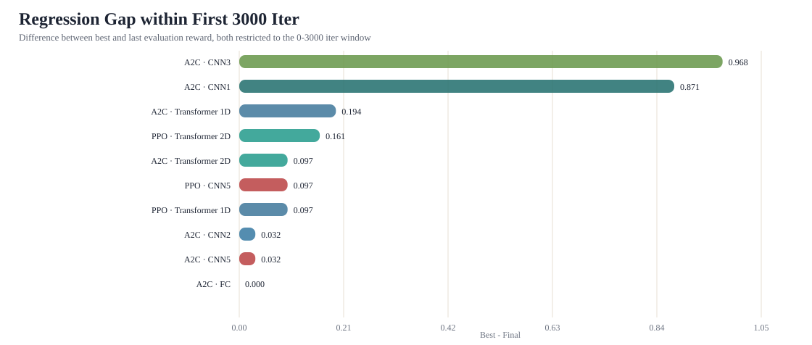
| Family | A2C @ iter≤3000 | PPO @ iter≤3000 |
|---|---|---|
| fc | 1.968 pegs=1.0 | 0.968 pegs=2.0 |
| cnn1 | 0.065 pegs=30.0 | 1.968 pegs=1.0 |
| cnn2 | 0.935 pegs=3.0 | 0.968 pegs=2.0 |
| cnn3 | 0.000 pegs=32.0 | 1.968 pegs=1.0 |
| cnn4 | 0.968 pegs=2.0 | 0.968 pegs=2.0 |
| cnn5 | 0.935 pegs=3.0 | 0.806 pegs=7.0 |
| transformer_1d | 0.710 pegs=10.0 | 0.806 pegs=7.0 |
| transformer_2d | 0.806 pegs=7.0 | 0.742 pegs=9.0 |
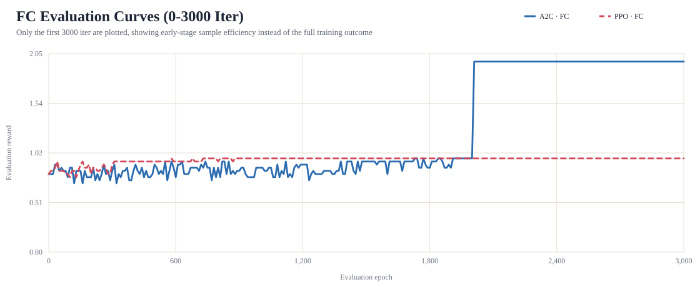
如果只看前 3000 iter，FC 还没有把 A2C 和 PPO 拉开到“是否 1-peg solved”这么大的差距。 A2C · FC 的窗口末评估奖励为 1.968， PPO · FC 为 0.968。 也就是说，FC 的优势在 3000 iter 窗口内已经能看见，但它仍然更像一条稳步爬升曲线，而不是最激进的早期解法。
从早期曲线看，FC 更像是一个稳步爬升但启动不算快的基线。
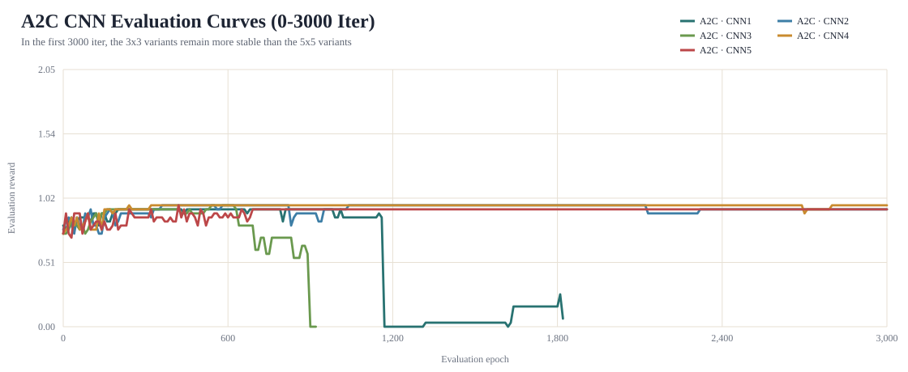
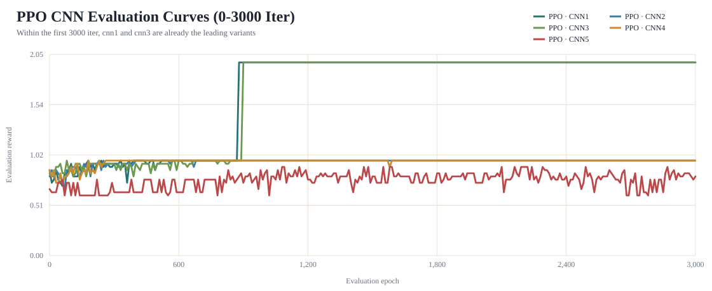
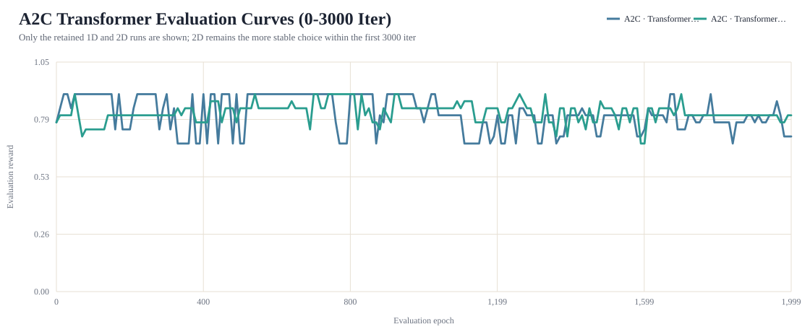
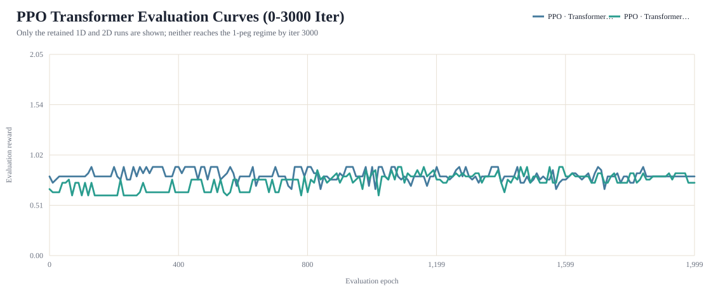
在 A2C 下，Transformer 仍然是最容易出现训练不稳的一类。A2C · Transformer 1D 在 iter 3000 时的梯度范数为 115.278， 熵为 0.012； 而 A2C · Transformer 2D 分别是 0.895 和 0.064。 这说明在保留实验里，2D 位置编码至少提升了前 3000 iter 的稳定性。
但这个优势并没有在 PPO 下转化成绝对性能突破。PPO · Transformer 1D 和 PPO · Transformer 2D 在前 3000 iter 内都没有达到 1 peg， 且窗口末评估奖励分别只有 0.806 和 0.742。
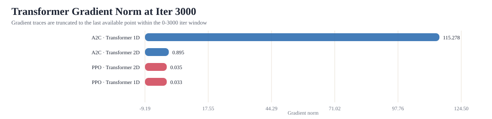
由于旧版四个实验已被移除，这里只保留新批次 1D/2D 的同窗比较。
这两个指标都取自前 3000 iter 窗口内最后一个训练点。熵更接近“策略是否过早变得确定”，critic loss 更接近“价值函数当前拟合误差”； 它们都能辅助解释稳定性，但都不能单独替代评估回报。
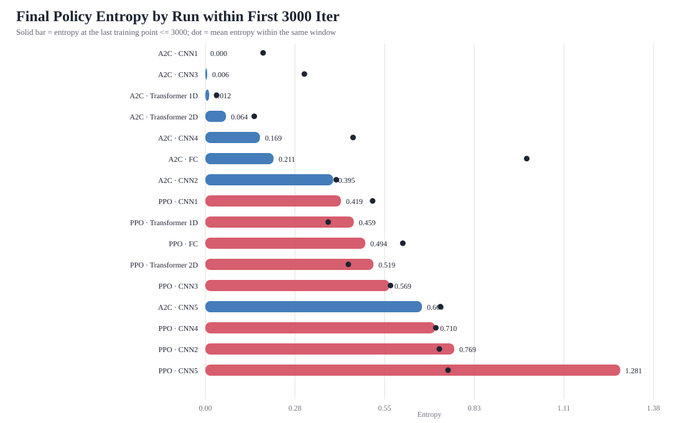
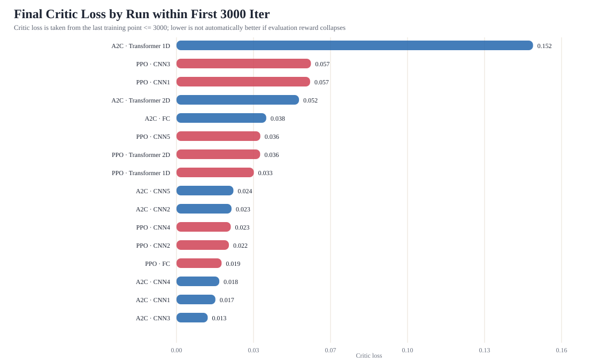
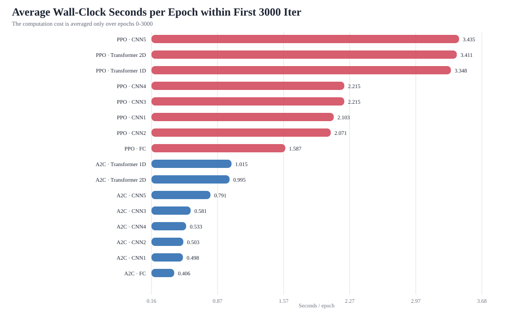
A2C-FC 在前 3000 iter 内平均每个 epoch 只需 0.406 秒； PPO-Transformer 1D 约为 3.348 秒。 这解释了为什么 PPO-Transformer 即使曲线不占优，仍会消耗明显更多的优化时间。
| Run | Focus | Eval reward @ iter≤3000 | Pegs left | Best epoch | 1-peg epoch | Cost | Regression | Entropy | Critic | Grad | Reading |
|---|---|---|---|---|---|---|---|---|---|---|---|
| A2C · FC A2C 2026-04-18 22-21-17_fc | 147-d flatten -> GELU MLP -> policy/value heads | 1.968 best 1.968 | 1.0 best 1.0 | 2,010 | 2010 | 20.3 0.406 s/epoch | 0.000 | 0.211 | 0.038 | 0.071 | 1-peg solved; held solution |
| A2C · CNN1 A2C 2026-04-19 00-30-50_cnn1 | CNN-A: 5x5 + BatchNorm | 0.065 best 0.935 | 30.0 best 3.0 | 200 | — | 15.1 0.498 s/epoch | 0.871 | 0.000 | 0.017 | 0.034 | briefly improved then collapsed; entropy collapse |
| A2C · CNN2 A2C 2026-04-19 00-48-53_cnn2 | CNN-B: 3x3 + BatchNorm | 0.935 best 0.968 | 3.0 best 2.0 | 360 | — | 25.1 0.503 s/epoch | 0.032 | 0.395 | 0.023 | 0.068 | stable at 2 pegs |
| A2C · CNN3 A2C 2026-04-19 03-18-03_cnn3 | CNN-C: 5x5 + GroupNorm | 0.000 best 0.968 | 32.0 best 2.0 | 540 | — | 9.0 0.581 s/epoch | 0.968 | 0.006 | 0.013 | 0.098 | peaked at 2 pegs; entropy collapse |
| A2C · CNN4 A2C 2026-04-19 03-29-09_cnn4 | CNN-D: 3x3 + GroupNorm | 0.968 best 0.968 | 2.0 best 2.0 | 240 | — | 26.6 0.533 s/epoch | 0.000 | 0.169 | 0.018 | 0.015 | stable at 2 pegs |
| A2C · CNN5 A2C 2026-04-20 04-33-09_cnn5 | CNN-E: 3x3 + GroupNorm + PreAct residual + SE | 0.935 best 0.968 | 3.0 best 2.0 | 420 | — | 39.6 0.791 s/epoch | 0.032 | 0.669 | 0.024 | 0.062 | stable at 2 pegs |
| A2C · Transformer 1D A2C 2026-04-20 16-18-59_transformer_1d | 1D sinusoidal positional encoding | 0.710 best 0.903 | 10.0 best 4.0 | 20 | — | 33.8 1.015 s/epoch | 0.194 | 0.012 | 0.152 | 115.278 | briefly improved then collapsed; entropy collapse; gradient spike |
| A2C · Transformer 2D A2C 2026-04-20 16-19-00_transformer_2d | 2D learnable row/col positional encoding | 0.806 best 0.903 | 7.0 best 4.0 | 50 | — | 33.2 0.995 s/epoch | 0.097 | 0.064 | 0.052 | 0.895 | briefly improved then collapsed |
| PPO · FC PPO 2026-04-19 06-08-11_fc | 147-d flatten -> GELU MLP -> policy/value heads | 0.968 best 0.968 | 2.0 best 2.0 | 580 | — | 79.4 1.587 s/epoch | 0.000 | 0.494 | 0.019 | — | stable at 2 pegs |
| PPO · CNN1 PPO 2026-04-19 13-07-41_cnn1 | CNN-A: 5x5 + BatchNorm | 1.968 best 1.968 | 1.0 best 1.0 | 880 | 880 | 105.2 2.103 s/epoch | 0.000 | 0.419 | 0.057 | — | 1-peg solved; held solution |
| PPO · CNN2 PPO 2026-04-19 19-16-25_cnn2 | CNN-B: 3x3 + BatchNorm | 0.968 best 0.968 | 2.0 best 2.0 | 230 | — | 103.5 2.071 s/epoch | 0.000 | 0.769 | 0.022 | 0.057 | stable at 2 pegs |
| PPO · CNN3 PPO 2026-04-19 21-08-53_cnn3 | CNN-C: 5x5 + GroupNorm | 1.968 best 1.968 | 1.0 best 1.0 | 900 | 900 | 110.7 2.215 s/epoch | 0.000 | 0.569 | 0.057 | 0.125 | 1-peg solved; held solution |
| PPO · CNN4 PPO 2026-04-19 23-09-53_cnn4 | CNN-D: 3x3 + GroupNorm | 0.968 best 0.968 | 2.0 best 2.0 | 180 | — | 110.7 2.215 s/epoch | 0.000 | 0.710 | 0.023 | 0.113 | stable at 2 pegs |
| PPO · CNN5 PPO 2026-04-19 23-25-12_cnn5 | CNN-E: 3x3 + GroupNorm + PreAct residual + SE | 0.806 best 0.903 | 7.0 best 4.0 | 1,080 | — | 171.8 3.435 s/epoch | 0.097 | 1.281 | 0.036 | — | briefly improved then collapsed |
| PPO · Transformer 1D PPO 2026-04-20 14-18-23_transformer_1d | 1D sinusoidal positional encoding | 0.806 best 0.903 | 7.0 best 4.0 | 130 | — | 111.6 3.348 s/epoch | 0.097 | 0.459 | 0.033 | 0.033 | briefly improved then collapsed |
| PPO · Transformer 2D PPO 2026-04-20 14-18-23_transformer_2d | 2D learnable row/col positional encoding | 0.742 best 0.903 | 9.0 best 4.0 | 1,080 | — | 113.7 3.411 s/epoch | 0.161 | 0.519 | 0.036 | 0.035 | briefly improved then collapsed |